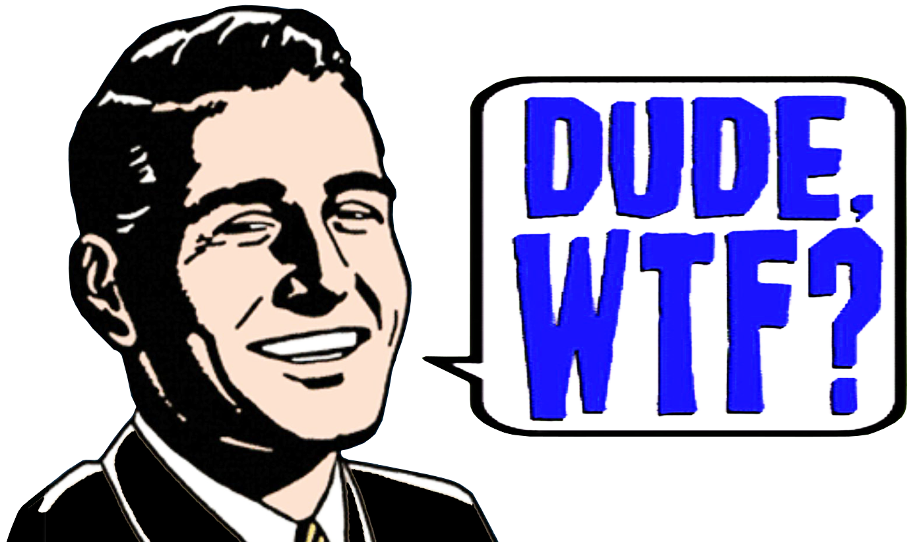
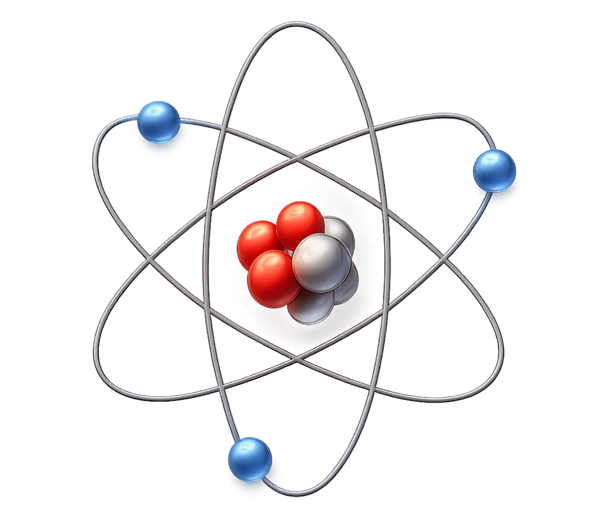
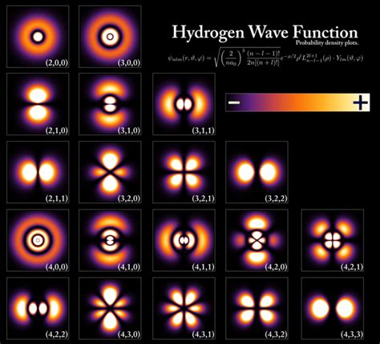
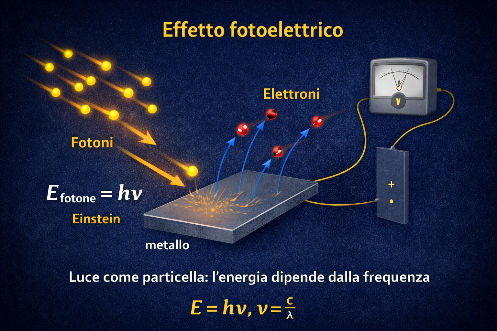
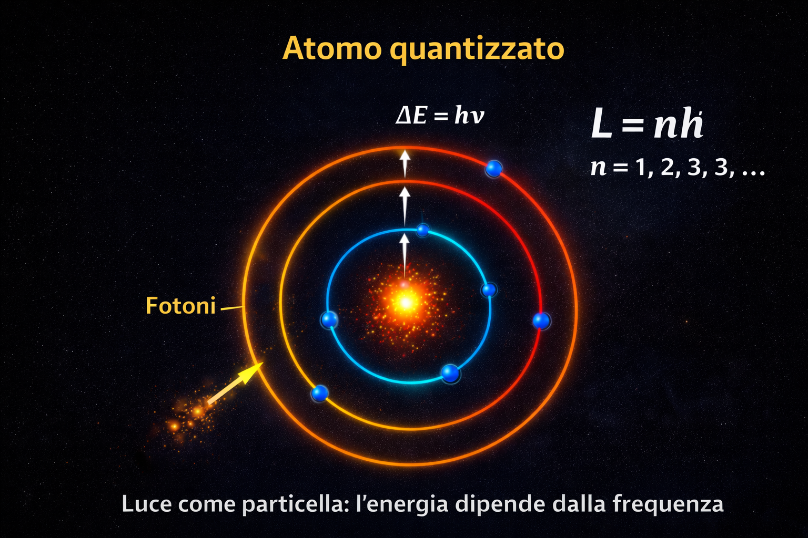
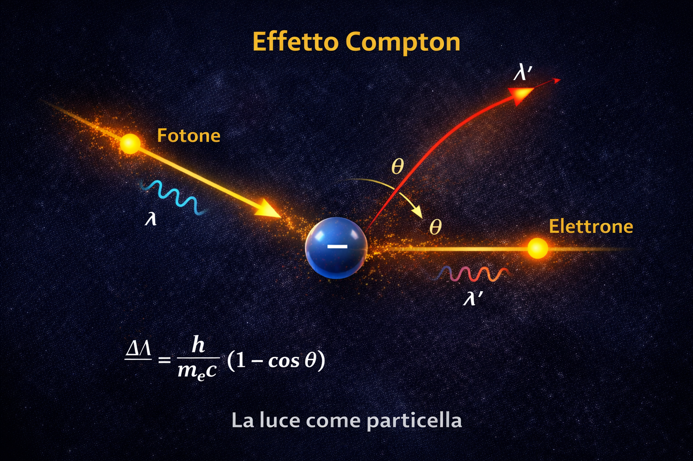
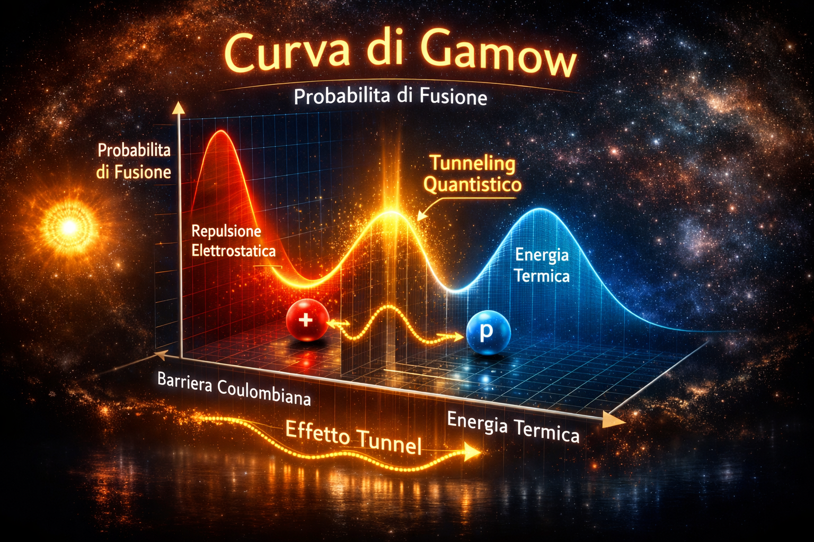

Nobody understands quantum mechanics.
And that’s not a bug.
It’s the point.
Nessuno comprende davvero la meccanica quantistica.
E non è un limite.
È esattamente ciò che la rende tale.
— Richard P. Feynman
Meccanica Quantistica
Una guida gentile
alla rivoluzione della Fisica
prof. Diego Fantinelli
Perché parlare di
Meccanica Quantistica?!?
non si può farne a meno!
- Perché oggi la meccanica quantistica è ovunque, ma spesso viene citata senza essere compresa
- Perché premi Nobel e dati economici mostrano che non è teoria astratta, ma tecnologia reale
- Perché molte innovazioni digitali, dall’AI ai microchip, nascono da principi quantistici
il dato
il 30%
del PIL degli USA
dipende dalla tecnologia sviluppata
dalla meccanica quantistica
Se prendiamo il PIL degli Stati Uniti
— circa 30.600 miliardi di dollari —
il 30% corrisponde a circa:
9.180 miliardi di dollari
È più di interi settori economici di molti Paesi messi insieme.
Se prendiamo il PIL della Cina
— circa 19.400 miliardi di dollari —
il 30 % corrisponde a circa:
5.820 miliardi di dollari
Anche qui una quota enorme dell’economia dipende da tecnologie collegate alla MQ.
Se prendiamo il PIL dell’Unione Europea
— circa 19.900 miliardi di dollari —
il 30 % corrisponde a circa:
5.970 miliardi di dollari
Anche in questo caso è un valore comparabile alle economie di grandi Paesi.
Il mondo sta “spendendo”
per la Meccanica Quantistica
21.000
miliardi di dollari
USA + Cina + Unione Europea
disclaimer!
- Qui inizia la vera rivoluzione: la fisica classica non viene aggiustata, viene superata.
- Ogni evento introduce un concetto che resta valido ancora oggi.
- Ogni evento introduce un concetto che resta valido ancora oggi.
Il mio punto di vista
Il mio POV
digeritore di contenuti
modalità studente
mettersi in ascolto, fare domande, accettare la complessità
- Studio di articoli, testi avanzati e modelli matematici non immediati
- Accettare di non capire tutto subito
- Slow Study: fermarsi, prendere appunti, riscrivere con parole proprie, farsi supportare dall'AI e litigarci pure!
- Trasformare il disagio in comprensione
modalità insegnante
trasformare idee difficili in concetti accessibili
- Selezionare ciò che è essenziale e ciò che può essere tralasciato
- Ridurre la complessità senza perdere il significato
- Usare immagini, metafore ed esempi concreti
- Costruire un percorso comprensibile per chi ascolta
Il mio metodo
- Scomporre la complessità: studiare i dettagli tecnici e individuare le idee chiave.
- Riformulare: trasformare concetti avanzati in immagini, metafore, analogie.
- Trasmettere: costruire una narrazione accessibile, senza banalizzare.
L’obiettivo
- Mostrare che anche le idee più complesse possono essere comprese senza rinunciare al rigore.
- Trasformare concetti astratti in immagini, intuizioni e storie.
- Stimolare curiosità e meraviglia, senza banalizzare la scienza.
- Lasciare una domanda aperta, non una formula da ricordare.
"Sono del tutto convinto che Lui non stia affatto giocando a dadi"
— Albert Einstein - settembre 1926
"Einstein, smetta di dire a Dio cosa deve fare."
— Niels Bohr - settembre 1926
preludio
all'inizio fu l'atomo
Da dove iniziare?
Dal punto in cui la fisica classica smette di funzionare
La meccanica quantistica non nasce per complicare la fisica, ma per risolvere un problema reale
L’atomo secondo la fisica classica
Un nucleo centrale con elettroni in orbita
Un modello intuitivo, ispirato al sistema solare
L'atomo classico
gli elementi
- Una carica positiva: il nucleo (protoni)
- Una carica negativa: elettroni in orbita
- Modello ispirato al sistema solare
la struttura
Il problema fatale
Un elettrone in orbita è una carica accelerata
Secondo l’elettromagnetismo classico, dovrebbe emettere energia
emissione di energia \( \Longleftrightarrow \) perdita di energia
Risultato: l’atomo dovrebbe collassare
Eppure…
Gli atomi sono stabili
La materia esiste, le molecole esistono, noi esistiamo
La fisica classica non riesce a spiegare perché
La prima idea rivoluzionaria
L’energia non è continua
Gli elettroni possono avere solo certi valori di energia
Non possono perdere energia “a piacere”
Il limite del modello
Funziona… ma solo in casi semplici
Non spiega davvero che cos’è un elettrone
Serve cambiare il linguaggio con cui descriviamo la realtà
Il vero salto
L’elettrone non ha una traiettoria definita
Non possiamo dire “dove è”
Possiamo dire solo “dove può essere”
L’atomo quantistico
Non orbite, ma distribuzioni di
PROBABILITÀ
Gli orbitali descrivono regioni dello spazio
È così che la materia diventa stabile
L’atomo quantistico
cosa cambia
- L’elettrone non segue una traiettoria definita
- È descritto da una funzione d’onda
- Conta la probabilità di trovarlo in una certa regione
la struttura
atto secondo
nascita della meccanica quantistica
1900 — Max Planck
Quantizzazione dell’energia
Radiazione del corpo nero
Il quanto di energia
- La fisica classica fallisce nel descrivere il corpo nero.
- Planck introduce l’idea di energia scambiata a pacchetti discreti.
- Nasce il concetto di quanto.
1905–1910
la fisica classica non molla
- La legge classica descrive bene le basse frequenze.
- Ma alle alte frequenze predice energia infinita.
- Risultato assurdo: catastrofe ultravioletta.
Rayleigh e Jeans
difendere l’indifendibile
- La legge classica descrive correttamente la radiazione solo a basse frequenze.
- Alle alte frequenze la teoria predice energia infinita.
- Questo risultato non è fisico e non può essere corretto sperimentalmente.
- Il fallimento è strutturale: il modello classico non è più valido.
$$ u(\lambda, T)=\frac{8 \pi k T}{\lambda^4} $$
1905 — Albert Einstein
Fotoni
- Quanto di radiazione elettromagnetica: è il portatore elementare dell'energia della luce, con energia $$ E=h \nu \Longleftrightarrow \nu= \frac{c}{\lambda} $$ e senza massa a riposo.
- la luce si comporta come un insieme di pacchetti discreti di energia, detti fotoni.
- Nasce il concetto di quanto.
Effetto fotoelettrico
Luce come particella
- La luce espelle elettroni solo sopra una frequenza minima.
- L’intensità non basta.
- La luce è composta da fotoni.
1913 — Niels Bohr
Livelli di energia
- Nell’atomo gli elettroni possono occupare solo valori discreti di energia, detti livelli energetici.
- Non sono permesse energie intermedie: l’elettrone non può “stare a metà” tra due livelli.
- Il passaggio tra due livelli avviene tramite assorbimento o emissione di un fotone, tale che $$ \Delta E = h\nu $$
- I livelli di energia spiegano la stabilità dell’atomo e l’origine degli spettri discreti.
Livelli di Energia
Stabilità dell’atomo
- Secondo la fisica classica l’atomo collasserebbe.
- Bohr introduce orbite e livelli energetici discreti.
- L’atomo diventa stabile.
1923 — Arthur Compton
Fotone con quantità di moto
- La luce si comporta come un insieme di particelle: i fotoni.
- Nell’urto con un elettrone il fotone perde energia e quantità di moto.
- La variazione di lunghezza d’onda dipende solo dall’angolo di diffusione.
Effetto Compton
Il fotone è reale
- La luce scambia quantità di moto con gli elettroni.
- Risultato spiegabile solo con particelle.
1925–1927
Heisenberg · Schrödinger


Nuova meccanica
- Niente traiettorie, solo osservabili.
- La funzione d’onda descrive le probabilità.
- La realtà microscopica non è deterministica.
La funzione d’onda
la descrizione quantistica di una particella
non dice dove è una particella
ma che cosa può accadere
La funzione d’onda non è osservabile
Ma il suo modulo quadro sì:
$$ P(x) = |\psi(x)|^2 $$
La probabilità di trovare la particella in un certo punto
La funzione d’onda
$$ i \hbar \frac{\partial \psi}{\partial t} = -\frac{\hbar^2}{2m} \nabla^2 \psi + V \psi $$
Werner Heisemberg
Werner Heisemberg
Il principio di indeterminazione
non è un limite degli strumenti
è un limite della natura
a livello quantistico
Posizione e quantità di moto
non possono essere entrambe definite con precisione arbitraria
$$ \Delta x \, \Delta p \ge \frac{\hbar}{2} $$
più conosci una, meno conosci l’altra
1935–1964
EPR · Bell

Entanglement
- Sistemi quantistici non separabili.
- Violazione del realismo locale.
- La quantistica è non-locale.
2000–oggi
informazione e tecnologie quantistiche
Nobel per la Fisica 2022
Aspect · Clauser · Zeilinger

Entanglement e test delle disuguaglianze di Bell

Non-località quantistica: “la filosofia diventa esperimento”
Nobel 2022: entanglement e Bell
- Esperimenti con fotoni entangled controllabili e ripetibili.
- Test delle disuguaglianze di Bell: esclusione del realismo locale.
- Base concettuale per crittografia e comunicazione quantistica.
Nobel per la Fisica 2023
Agostini · Krausz · L’Huillier

Impulsi di attosecondi e dinamica elettronica

“Fotografare” gli elettroni su scale 10−18 s
Nobel 2023: impulsi di attosecondi
- Metodi per generare e misurare impulsi luminosi di durata attosecond.
- Accesso sperimentale alla dinamica degli elettroni in atomi e molecole.
- Nasce una “cronofotografia” quantistica dei processi microscopici.
Nobel per la Fisica 2024
Bawendi · Brus · Ekimov

Nanocristalli: la quantistica nei materiali

Confinamento quantistico: il colore dipende dalla dimensione
Nobel 2024: quantum dots
- Nanocristalli semiconduttori con livelli energetici quantizzati.
- Confinamento: proprietà ottiche controllabili tramite la dimensione.
- Applicazioni: display, bioimaging, fotonica, materiali avanzati.
Dal quanto all’ingegneria
- Informazione quantistica: sovrapposizione, entanglement, misura.
- Tecnologie: controllo, coerenza, materiali, fotonica.
- La meccanica quantistica diventa piattaforma tecnologica.
Il mondo non è come sembra
Il Sole esiste grazie alla
Meccanica Quantistica
non basterebbe la fisica classica
Il problema della fisica classica
I protoni si respingono troppo
Temperatura del Sole: ~15 milioni °C
Energia richiesta per fondere i nuclei: molto più alta
La soluzione quantistica
Effetto Tunnel
I protoni possono “bucare” la barriera di Coulomb
La probabilità di fusione
dipende dall’“esponenziale di Gamow”
La meccanica quantistica determina i ritmi delle stelle
la Curva di Gamow
L'esponenziale di Gamow
La probabilità di attraversare la barriera di Coulomb è:
$$P \propto \exp\!\left(-\frac{2\pi Z_1 Z_2 e^2}{\hbar v}\right)$$
dove la probabilità dipende in modo esponenziale dall’energia relativa
La probabilità di tunneling (WKB)
Approssimazione semiclassica:
$$ T \approx \exp\!\left( -\frac{2}{\hbar} \int_{x_1}^{x_2} \sqrt{2m\,[V(x)-E]}\, dx \right) $$
Nel Sole, questa probabilità è piccola ma non nulla
Perché il Sole brilla?
La curva di Gamow determina il ritmo della fusione
$$ P(E) = \text{Max}\left[ \exp(-E/kT) \cdot \exp\!\left(-\frac{b}{\sqrt{E}}\right) \right] $$
Una competizione tra il termine termico e il termine di tunneling
In conclusione
Le stelle brillano grazie alla fisica quantistica
la vita esiste perché le particelle possono attraversare una barriera
I tre scienziati del Nobel 2026
Effetto tunnel, superconduttività, controllo quantistico
John Clarke
chi è
- Lavora su sistemi quantistici macroscopici
- Fisico sperimentale britannico
- Specialista in superconduttività quantistica
- Pioniere dei dispositivi a effetto tunnel
- Sensori quantistici ultra-sensibili
John Clarke
Il quantistico su scala macroscopica
- Ha portato l’effetto tunnel nei dispositivi reali
- Ha studiato sistemi quantistici “visibili”
- Ha aperto la strada ai sensori quantistici ultra-sensibili
Michel H. Devoret
Chi è
- Fisico franco-americano
- Leader nei qubit superconduttivi
- Ha reso controllabili sistemi quantistici complessi
- Fondamentale per il calcolo quantistico
Michel H. Devoret
Dal fenomeno al controllo
- Ha reso controllabili sistemi quantistici complessi
- Ha trasformato l’effetto tunnel in strumento ingegneristico
- È alla base dei qubit superconduttivi
John M. Martinis
Chi è
- Fisico sperimentale statunitense
- Leader dei processori quantistici Google
- Ha dimostrato la “supremazia quantistica”
- Ingegneria di sistemi quantistici reali
John M. Martinis
La quantistica che calcola
- Ha trasformato i qubit in macchine funzionanti
- Ha dimostrato la “supremazia quantistica”
- Ha portato l’effetto tunnel nel calcolo reale
atto secondo
Entanglement
Quantistico
è un punto di vista
La rivoluzione
è un punto di vista
metodo
di nuovo studente
- Dimostrare che anche le cose complesse possono essere spiegate in modo semplice e intuitivo.
- Costruire immagini mentali e narrazione.
atto terzo
Federico Faggin &
la Fisica Quantistica
Il ponte tra teoria e tecnologia
- Inventore del Silicon Gate
- Padre del primo microprocessore
- Tecnologia basata sui principi quantistici dei semiconduttori
La Quantistica nei Transistor
- Bande di valenza e conduzione
- Drogaggio del silicio
- Effetto tunnel
- Probabilità degli stati elettronici
Meccanica Quantistica
miniaturizzazione
rivoluzione digitale
Faggin e la Coscienza
- La coscienza non è solo materia
- L'informazione è fondamentale
- Temi comuni alla MQ: osservatore, collasso, non-località
Tecnologia e interpretazione quantistica
Perché Faggin è importante
per la Fisica Quantistica?
- Ha trasformato la MQ in tecnologia quotidiana
- Ha reso possibile la miniaturizzazione dei transistor
- Ha aperto nuovi dialoghi su coscienza e informazione
- Il mondo digitale nasce da idee quantistiche
Effetto Tunnel
- Una particella può attraversare una barriera
- …anche se non ha l’energia per superarla
- Fenomeno possibile solo nella meccanica quantistica
Perché l’effetto tunnel è cruciale?
- Permette reazioni impossibili per la fisica classica
- Fa funzionare i transistor moderni
- È la chiave della fusione nelle stelle
Il Sole brilla grazie all’Effetto Tunnel
- I protoni devono avvicinarsi moltissimo
- Ma la repulsione elettrica lo impedisce
- Classicamente: fusione impossibile
- Quantisticamente: tunnel → fusione → luce
titolo
Colonna 1
- Punto 1
- Punto 2
- Punto 3
Colonna 2
Qui la colonna destra, con contenuti diversi.
Ideale per confronti, immagini, grafici, ecc.
domande?
Un Nobel che parla di futuro
Dalla fisica alle reti neurali: quando un’idea cambia il mondo
- Perché la fisica non è solo “teoria”: è tecnologia e potere trasformativo.
- Perché l’AI moderna nasce anche da modelli ispirati alla fisica.
- Perché il futuro non è neutro: va capito, discusso, governato.
Geoffrey E. Hinton - Nobel per la Fisica 2024
- The Godfather of AI -
Discorso alla cerimonia di premiazione del Premio Nobel per la Fisica 2024, professor Geoffrey Hinton.
Quest’anno i Comitati Nobel per la Fisica e per la Chimica hanno riconosciuto i progressi straordinari compiuti in una nuova forma di intelligenza artificiale che utilizza reti neurali artificiali per imparare a risolvere problemi computazionali complessi.
Questa nuova forma di intelligenza artificiale eccelle nel modellare l’intuizione umana più che il ragionamento umano e ci permetterà di creare assistenti altamente intelligenti e competenti, in grado di aumentare la produttività in quasi tutti i settori. Se i benefici di questa maggiore produttività potranno essere condivisi equamente, si tratterà di un enorme progresso per tutta l’umanità.
Purtroppo, il rapido sviluppo dell’intelligenza artificiale comporta anche molti rischi a breve termine. Ha già contribuito alla creazione di camere dell’eco divisive, offrendo alle persone contenuti che alimentano indignazione e polarizzazione. È già utilizzata da governi autoritari per la sorveglianza di massa e da criminali informatici per attacchi di phishing.
In un futuro prossimo, l’intelligenza artificiale potrebbe essere impiegata per creare nuovi virus devastanti e armi letali spaventose, capaci di decidere autonomamente chi uccidere o mutilare. Tutti questi rischi a breve termine richiedono un’attenzione urgente e decisa da parte dei governi e delle organizzazioni internazionali.
Esiste inoltre una minaccia esistenziale di più lungo periodo, che emergerà quando creeremo entità digitali più intelligenti di noi. Non sappiamo se saremo in grado di mantenerne il controllo, ma oggi abbiamo prove che, se verranno sviluppate da aziende guidate da profitti a breve termine, la nostra sicurezza non sarà la priorità.
Abbiamo urgente bisogno di ricerca su come impedire che queste nuove entità sviluppino il desiderio di prendere il controllo. Non si tratta più di fantascienza.
— Geoffrey Hinton
fonte YouTube: Banquet speech — Geoffrey Hinton (estratto)